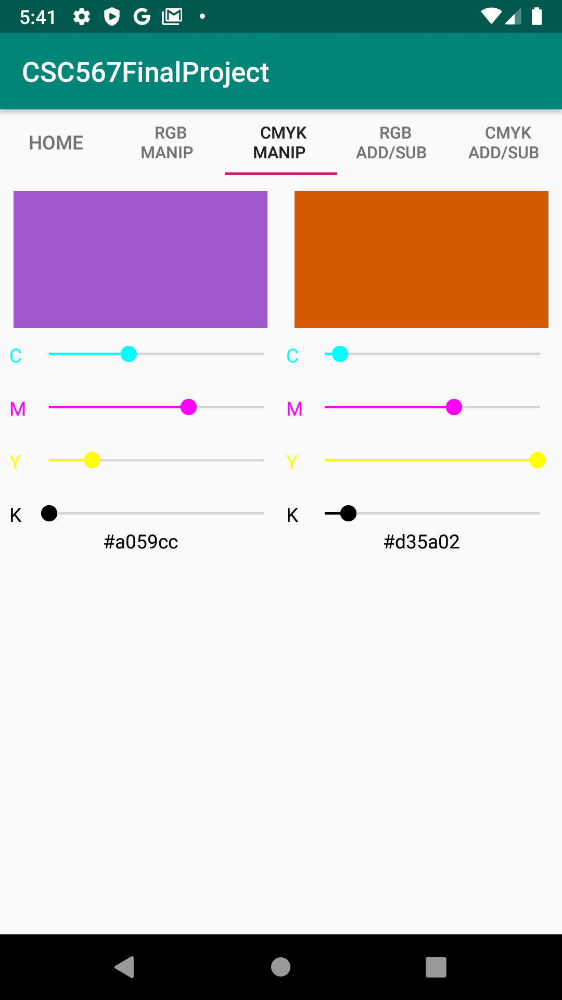

For any of you graphic designers out there, have you ever been in a situation where you wanted to find the
perfect color for your project while you were out and about, or maybe when you were away from your computer?
You are in luck! The Color Calculator app is here to help you zero in on the perfect colors for you, as well
as some complementary colors to spice things up even more!
This app allows for the user to manipulate RGB sliders to find just the color you are looking for. The app will also tell you
the hexcode value of the color as you mess around, incase you ever find a color that you might want to come back to. Along with finding a single color, Color Calculator
has another page that will take a color you make and show the complementary color on the other side!
Color Calculator can also help you if you need to find a color using the CMYK color mode.
CMYK slider manipulation and complements are now available alongside RGB!

Some more features we hope to implement sometime soon: